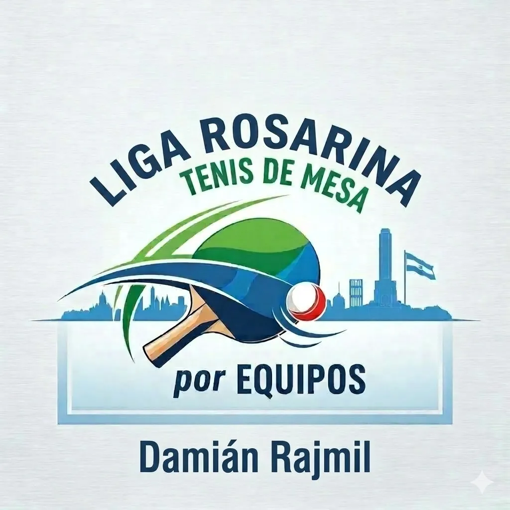

Histórico inicio de la Liga de Equipos Rosarina con récord de inscriptos
La bandera de largada finalmente caerá en las instalaciones del Club Atlético Provincial. Con más de 20 delegaciones y equipos listos para dejar todo en la mesa, se vivirá una jornada emocionante de tenis de mesa de altísimo nivel regional.
Desde tempranas horas, el sonido característico de las pelotas y el calor de las hinchadas le darán un marco espectacular al gimnasio principal. Equipos de toda la región se darán cita para disputar las primeras series de una temporada que promete ser una de las más reñidas de los últimos años.
Formato de Competencia y Desarrollo
El torneo se estructurará en fases de grupos seguidas de llaves de eliminación directa, permitiendo que tanto jugadores consolidados como las nuevas promesas de las categorías formativas sumen partidos clave en su desarrollo técnico y competitivo.
"Ver nuevamente las mesas del club llenas de familias y competidores nos demostrará que el tenis de mesa santafesino sigue creciendo a paso firme en toda la provincia."
La comisión organizadora agradecerá profundamente a las autoridades del club anfitrión, a los árbitros implicados y a cada uno de los sponsors locales que harán posible el despliegue logístico de semejante envergadura. Las posiciones actualizadas y los cruces de la próxima jornada se publicarán en el transcurso de la semana en el panel oficial de nuestra plataforma.